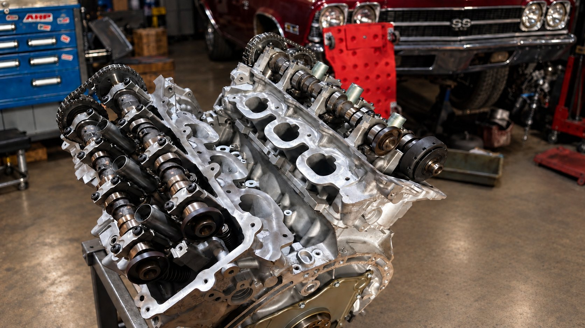

Preview · CVogel Designs
Engine trouble.
A person answers.
Family-owned shop on Chrisman Road. Thirty years in.
13333 Chrisman Rd · Houston, TX 77039
Locally owned. Locally operated.
A Houston shop.
A human connection.
You shouldn’t have to navigate a phone tree just to talk about your car.
At Affordable Engine and Automotive Repair, you can pick up the phone and speak with a real person. Tell us what’s going on, ask your questions, and talk through what you need.
We’re a family-owned shop in Houston, just 13 miles south of Spring, on Chrisman Road. That personal connection is how we want every repair conversation to begin.
Start with your vehicle.
Parts and labor.
Your questions first.
Wholesale parts and labor, so you skip the middleman.
Ask about the parts, labor and pricing for your repair. Call us about your vehicle and the work you need. Let’s start with a conversation, not a guessing game.
Talk about your repairKnow what you’re authorizing.
Ask for the scope of work and charges in writing before authorizing inspection or repair.
Have a billing question?
Read our refund and repair-payment information, then call the shop about your situation.
Engine and automotive repair
Let’s talk about
what’s under
your hood.
An engine concern, a transmission problem, or a question about a rebuild? Tell us about your vehicle and what you’ve noticed.
Ask the shop: (346) 298-9465Engine repair
Something doesn’t sound or feel right? Call with your vehicle’s year, make and model, and describe what’s happening. We’ll talk with you about your engine repair needs.
Rebuilt engines
Looking into a rebuilt engine? Talk to us about your vehicle and what you need before deciding on your next step. Call to discuss options and availability.
Transmission repair
Tell us about the shifting issue, unusual noise, or other transmission concern you’re experiencing. Call the shop to discuss your vehicle and repair needs.
Cylinder heads
Have a cylinder head question? Give us the engine and vehicle details so we can discuss the work you need and current availability.
Not sure where your problem fits? Call us. Confirm service availability and timing before bringing your vehicle in.
In the shop
The work.
A live loop of the bay. Shove it left or right.
From customers
In their words.
Real quotes from people who brought work here. Spelling and wording are theirs.
Come talk to us
Start with
a real person.
(346) 298-9465No email-only support. No automated runaround.
Just call and tell us what’s going on.